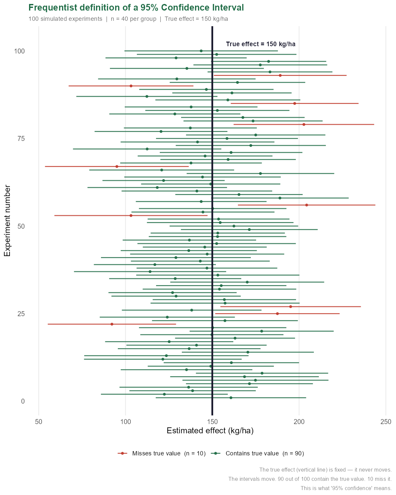
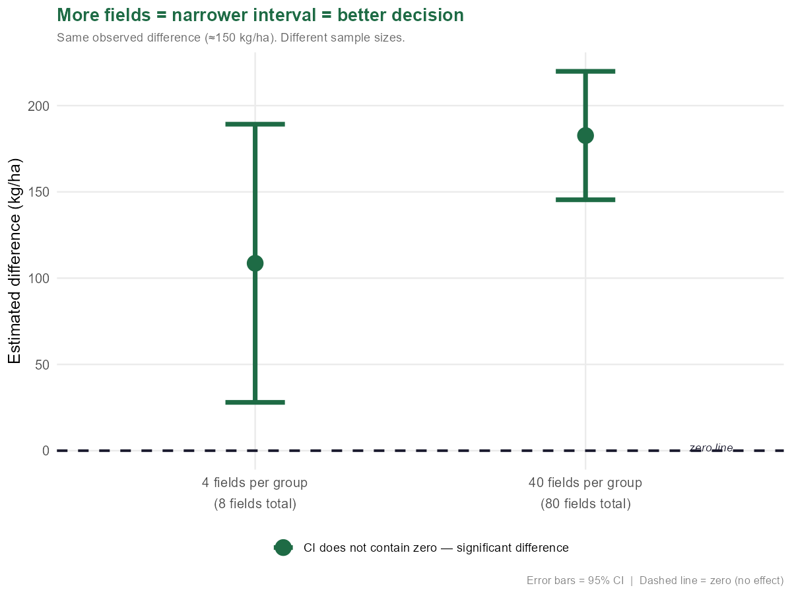

The Number That Hides Too Much
You have just concluded an experiment. You measured the yield of two fertilisers on eight fields — four fields per treatment. The standard fertiliser produced a mean of 4200 kg/ha, the new one 4350 kg/ha. The difference is 150 kg/ha.
You publish this number. A colleague in another laboratory repeats the experiment and obtains a difference of 80 kg/ha. Another gets 210 kg/ha. Who is right?
All three of them. Every sample mean is a different estimate of the same true value — a value you will never know with absolute certainty, because you cannot measure every field in the world with every possible fertiliser. What you can do is build an interval around your estimate and say: somewhere in here, the true effect is hiding.
This is the confidence interval. Not a single number that pretends to be exact. An interval that openly admits its own uncertainty.
The width of this interval is not a secondary detail — it is the main message. A narrow interval tells you that your estimate is precise: you have enough data, variability is contained, and you know with reasonable confidence where the true value lies. A wide interval tells you the opposite: you have few data, or your data vary greatly, and your estimate is still rough. Publishing only the mean without the interval is like saying "I live in Milan" without specifying the neighbourhood — technically correct, practically of little use.
The p-value tells you whether something happened. The confidence interval tells you how much happened, and how precisely you know it. They are answers to different questions. In modern statistics, the confidence interval is increasingly considered the more informative of the two — because knowing that "the treatment works" is far less useful than knowing that "the treatment increases yield by between 128 and 172 kg/ha."
What the 95% Actually Means
Here is where most people get it wrong — and where clarity matters enormously.
A 95% confidence interval does not mean that there is a 95% probability that the true value lies within your interval.
This sentence sounds right. It feels right. It is wrong.
The true value is a fixed number. It exists in nature. It does not move. It is either inside your interval or it is not — there is no probability involved, only ignorance.
What moves is the interval itself. Every time you repeat the experiment, you collect slightly different data, obtain a slightly different mean, and build a slightly different interval — centred each time on the difference observed in that particular experiment. The 95% describes the behaviour of this procedure over the long run: if you repeated the experiment 100 times, 95 of your intervals would contain the true population value. The remaining 5 would miss it entirely.
The vertical line of the true value is fixed. Each interval has a different centre — the mean observed in that experiment — and shifts with it. When you publish your CI [128 – 172] you are saying: I used a method that works 95 times out of 100. I do not know whether this specific interval is one of the lucky 95 or one of the unfortunate 5. But the procedure I followed is reliable.
It is a statement about the method, not about any single measurement.
On the true value we do not know. In the examples throughout this notebook we have used 150 kg/ha as the "true population effect." This is a didactic device. In reality, the true value of the population is precisely what you are trying to estimate — you do not know it. In the simulation of 100 experiments we fix it artificially to show visually how the mechanism works. In a real experiment that vertical line exists, but you cannot see it.
Why we use Student's t and not 1.96. If you knew the true variability of the population (σ), you could use 1.96 from the standard normal distribution. In practice you never know it — you estimate σ from the SD of your sample (s). This substitution introduces a second source of uncertainty: you are uncertain about the mean, and uncertain about your estimate of the variability too. Student's t corrects for both uncertainties by widening the interval — the more so the smaller the sample. With 4 fields per group (total n = 8, so 6 degrees of freedom), the critical value is 2.447 instead of 1.96. With 40 fields it falls to 2.02. With very large samples (n > 100) it converges to 1.96 and the difference becomes negligible.
How It Is Calculated: The Pieces of the Mechanism
Back to your eight fields. Four with fertiliser A, four with fertiliser B.
The confidence interval is not calculated on the mean of a single group. It is calculated on the difference between the two means — because that is the question: what is the true effect of the new fertiliser?
Three ingredients. Each does one precise thing.
The observed difference (150 kg/ha) is the centre of the interval — your best estimate of the true effect.
The SE of the difference measures how precise that estimate is. It is calculated from the internal variability of each group and the sample size:
With only 4 fields per group, the SE is large — few measurements, high uncertainty.
The critical value t* is the multiplier that decides how wide the interval must be. It comes from Student's t distribution and depends on two things: how much data you have (degrees of freedom = n − 1 per group) and how confident you want to be (95%? 99%?).
With df = 6 and 95% confidence, the two-tailed t table gives t* = 2.447. You always use two tails for a CI, because the interval is symmetric — the 5% of error is split equally, 2.5% on each side. If you look up the 95% one-tailed column you find 1.943: correct for directional tests, wrong for the CI.
Putting it all together:
# ============================================================
# Statistics for Life Sciences
# Notebook 02 — The Confidence Interval
# Script 04: Calculation of CI from two groups
# Dataset: fertiliser yield experiment (8 fields)
# ============================================================
group_A <- c(4100, 4250, 4150, 4300)
group_B <- c(4400, 4300, 4450, 4250)
n_A <- length(group_A); n_B <- length(group_B)
sd_A <- sd(group_A); sd_B <- sd(group_B)
diff_obs <- mean(group_B) - mean(group_A)
se_diff <- sqrt(sd_A^2 / n_A + sd_B^2 / n_B)
df <- n_A + n_B - 2
t_crit <- qt(0.975, df = df) # two-tailed, 95%
ci_low <- diff_obs - t_crit * se_diff
ci_high <- diff_obs + t_crit * se_diff
cat("=== Fertiliser yield experiment ===\n\n")
cat(sprintf(" Group A mean : %.1f kg/ha\n", mean(group_A)))
cat(sprintf(" Group B mean : %.1f kg/ha\n", mean(group_B)))
cat(sprintf(" Observed diff : %.1f kg/ha\n", diff_obs))
cat(sprintf(" SD group A : %.2f\n", sd_A))
cat(sprintf(" SD group B : %.2f\n", sd_B))
cat(sprintf(" SE of difference : %.2f\n", se_diff))
cat(sprintf(" df : %d\n", df))
cat(sprintf(" t critical (2-t) : %.3f\n", t_crit))
cat(sprintf(" 95%% CI : [%.1f — %.1f] kg/ha\n", ci_low, ci_high))
cat("\n")
# Confirm with Student's t.test (assuming equal variances)
result <- t.test(group_B, group_A, var.equal = TRUE)
cat("=== Confirmed via t.test() ===\n\n")
cat(sprintf(" 95%% CI : [%.1f — %.1f] kg/ha\n",
result$conf.int[1], result$conf.int[2]))
cat(sprintf(" t statistic : %.3f\n", result$statistic))
cat(sprintf(" degrees of freedom: %.1f\n", result$parameter))
cat(sprintf(" p-value : %.4f\n", result$p.value))
cat(sprintf(" CI contains zero? : %s\n",
ifelse(result$conf.int[1] < 0, "YES — no significant difference", "NO — significant difference")))With only 4 fields per group, p = 0.095 — not significant at the conventional threshold of 0.05. The CI [-4 — 304] contains zero, which is consistent: if the interval includes zero, the difference is not statistically significant. The two pieces of information always tell the same story.
How to Read It — Three Rules
You have your interval. What is it telling you?
The interval [-4 — 304] contains zero. This is the most important signal. It means that among the values compatible with your data there is also "difference = 0" — the two fertilisers could be identical. You cannot rule this out. Predictably, the t-test gives p > 0.05 and you cannot draw any solid conclusion.
But the interval also contains 304 kg/ha. Your data are compatible both with a useless fertiliser and with an extraordinarily effective one. The problem is not the fertiliser — it is that with 4 fields per group you do not have enough information to tell these scenarios apart. You need more replicates.
Rule 1 — Look at the width, not just the centre
A CI of [-4 — 304] and a CI of [128 — 172] both have 150 kg/ha as their central estimate. But the first tells you almost nothing useful, the second lets you make a decision. Width is the measure of your precision.
Rule 2 — Check whether the interval contains zero
If the CI contains zero, you cannot claim that the two treatments differ. If it does not contain zero, you have evidence of a real effect — and the interval also tells you how large that effect is.
Rule 3 — Always report the CI alongside the p-value
A p-value of 0.03 tells you the difference is unlikely to be due to chance. A CI of [0.01 — 0.02 kg/ha] tells you the difference is real but agronomically irrelevant. A CI of [120 — 180 kg/ha] tells you the difference is real and potentially very important. The CI carries information the p-value cannot carry: the how much.
Quick reference
| Situation | Conclusion |
|---|---|
| CI does not contain zero, narrow | Real effect, estimate is precise — you can decide |
| CI does not contain zero, wide | Real effect, but estimate is imprecise — more data needed |
| CI contains zero, wide | No conclusion — sample too small |
| CI contains zero, narrow | No effect, or effect so small it is negligible |


Student's t-test — one and two samples · One-way ANOVA · Multiple comparisons and post-hoc tests · Effect size (Cohen's d, η²) · Statistical power and minimum sample size · Normal distribution and its assumptions.